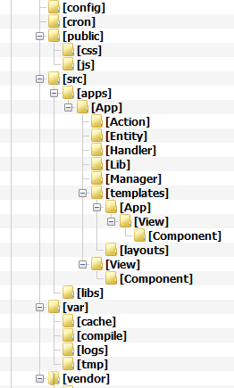

Начало
Требования:
- PHP 5.3+
- phing
- composer
- расширение PHP PDO и соответствующий драйвер PDO
- Apache *
- mod_rewrite *
* По-умолчанию используется Apache с модулем rewrite. Можно настроить любой веб-сервер по вашему желанию.
Установка
1. Для создания нового приложения в текущем каталоге, нужно выполнить команду:
$ composer create-project solo/app ./2. Настроить Apache так, чтобы каталог /public был доступен по HTTP (DOCUMENT_ROOT)
3. Выполнить команду
$ phing -f deploy-dev.xml4. Установка завершена, приложение доступно через HTTP.
Структура приложения

- config - содержит файлы конфигурации приложения.
- public - файлы, доступные по HTTP
- src/apps - в нем находится исходный код приложения.
- src/apps/App/Action - классы Действий
- src/apps/App/Entity - классы, описывающие бизнес-сущности
- src/apps/App/Handler - классы для обработчиков запросов
- src/apps/App/Lib - каталог библиотек, специфичных для этого приложения
- src/apps/App/Manager - классы менеджеров сущностей
- src/apps/App/templates/layouts - шаблоны макетов страниц.
- src/apps/App/templates/App ..... - шаблоны Представлений. Имена файлов соответствуют названиям PHP классов.
- src/apps/App/View - Классы Представлений.
- src/libs - каталог для библиотек, общих для всех приложений
- var - каталог для кэша, компилированных шаблонов, и пр.
- vendor - каталог для установки библиотек и компонентов приложения через composer
Конфигурация приложения
You can @mention a GitHub username to
generate a link to their profile. The resulting <a> element will link to the
contributor's GitHub Profile. For example: In 2007, Chris Wanstrath (@defunkt), PJ Hyett (@pjhyett), and Tom Preston-Werner (@mojombo) founded GitHub.
Support or Contact
Having trouble with Pages? Check out the documentation at http://help.github.com/pages or contact support@github.com and we’ll help you sort it out.